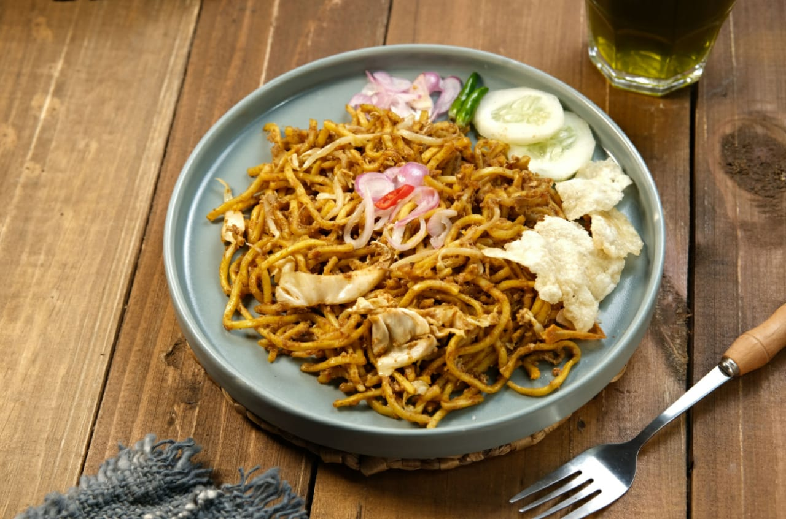

Hobi

Saya suka main badminton karena seru dan penuh tantangan. Rasanya asyik saat berlari mengejar shuttlecock dan memberikan smash yang keras. Selain bikin tubuh lebih bugar, main badminton juga seru kalau dimainkan bareng teman, jadi momen olahraga sekaligus bersenang-senang!
Favorite Lesson
Saya suka pelajaran Penjas karena bikin tubuh aktif dan sehat. Setiap kegiatan olahraga itu seru, mulai dari bermain bola hingga latihan kebugaran. Selain itu, Penjas juga mengajarkan kerja sama tim dan strategi, sehingga belajar sambil bergerak menjadi pengalaman yang menyenangkan!
Favorite Food

Saya suka mie goreng karena rasanya yang kaya dan menggugah selera. Mienya kenyal dengan bumbu yang pas, ditambah sayuran segar dan potongan daging yang membuatnya makin enak. Setiap suapan selalu memberikan kepuasan, dan mie goreng juga mudah disiapkan, jadi cocok untuk kapan saja!